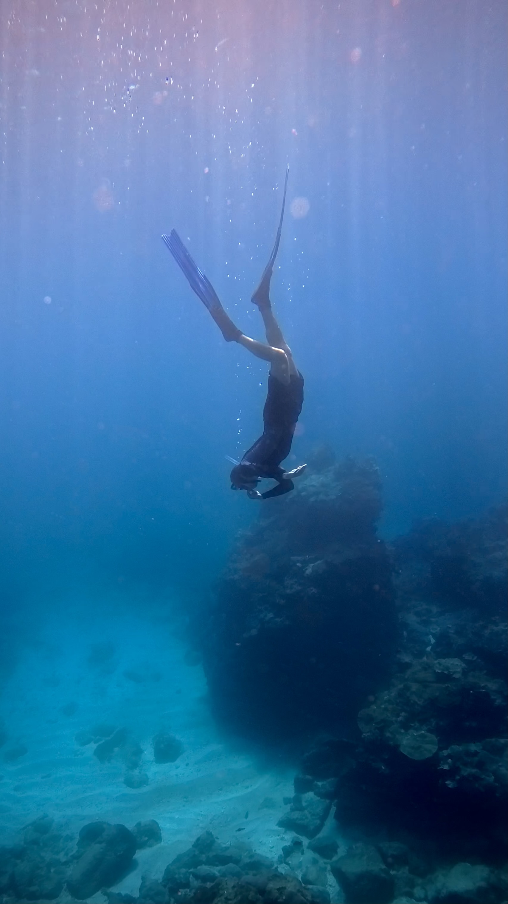

Haunted
October 17, 2026
A ghost sprained my ankle. It was nefarious, I assume, because I didn't offer money (phantom or otherwise) to the local temple during ghost month,1 and my lack of heavenly protection drew the attention of said ghost. We encountered each other at the riverside basketball courts, which he must have haunted in life as in death. The villain saw his chance during a game of pickup. As I jumped to contest a shot, he slipped a spectral knife between the ligaments of my left foot. I heard a pop and felt something in my foot move that had never moved before. I tumbled to the ground and caught sight of the weasel's grin as he dissipated into the night.
You wouldn't normally find me at the basketball court on a Monday evening, because it's not my sport of choice. I was there on a whim, at the invitation of a friend practicing before her company tournament. Tournaments like this are a sign of the dramatic growth basketball has experienced in Taiwan. Further evidence is clear from a short walk along the stretch of the 淡水 (Dànshuǐ) River running alongside Taipei, which reveals countless cement pads painted deep shades of green and crowned with white accent marks. On weeknights and weekends, these pads glitter with NBA jerseys and echo with a cacophony of squeaking rubber. The benches along the court hold scattered groupings of bags, bicycles, and girlfriends, temporarily cast aside for a game of pickup.
I'm not much of a basketball player. I was benched in the seventh grade for shooting too much. In fairness, all my childhood experience came on the adjustable plexiglass hoop parked on the pavement outside my home. Here, I was the lone participant and winner of every Final Four game I ever played in (never the NBA Finals: my father thought the grandstanding of superstars clashed with his values, though somehow the chair-throwing Bob Knight of his alma mater didn't). I didn't know how to pass, where to stand, or how to play defense. Therefore, when I joined the middle school team, I was quickly relegated to a previously unknown position on the court: the sideline. Having failed at the team sport, I returned to the comfort of solo play under the imaginary banners hung beside my adjustable hoop.
It was around the same time I was benched that I fell off a horse. I was 13 and proudly jumping over a log in our neighbor's enclosed riding arena when my family's horse spooked. At the time I thought his fright stemmed from a snake-shaped rope coiled at one end of the log, but my recent experience with the hoop-haunting spirit suggests it may have been the ghost's colleague. Either way, Cody, as he was called, bucked and tossed all 58kg (130 pounds) of me onto my left collarbone. It split like a wishbone, and I wore my arm in a sling for the next few months, humiliatingly strung across my chest like a dead fish. Having failed at equine pursuits, I quit riding and joined a soccer team.
Thoughts of these failures passed through my mind as I sat in a wheelchair in the waiting room of a crowded Taiwanese hospital. This injury, too, felt like a failure. I was grounded from my weekly schedule of pedaling my bicycle into the nearby mountains, trying different footholds on a bouldering route at the local gym, or practicing the timing of my pop-up at 外澳 (Wài'ào), a popular surf spot not far from downtown Taipei. Now, I was restricted to films and an old Game Boy, with two loaner crutches and a hastily purchased walking boot acting as my chariot to and from the hallway where takeout was delivered. The limits on my body felt like limits on my spirit. I felt weak. I felt like a failure.
A few weeks after my encounter with the ghost, I was back on my feet. I should say I was back on my flippers, because I had enrolled in a freediving class and could be found on the surface of a 20-meter-deep training pool in the city of 台中 (Táizhōng). I already had a fair amount of freediving experience. At least once a month, my partner, a few friends, and I drove to 北海岸 (Běihǎi'àn, the north coast) for a dive. The first time, I got seasick despite repeatedly insisting I didn't need Dramamine. After swallowing that tough pill, I encountered a host of new issues: I couldn't hold my breath for more than 30 seconds, I used my oxygen too quickly as I kicked below the waves, and I couldn't equalize my ears after a few meters. Here was a clear need for some proper training.

Of those issues, the most difficult to overcome was equalization. The method freedivers use (Frenzel2) is very different from the one scuba divers use (Valsalva3), and it's not intuitive. Naturally, I spend 99% of my time on land, where I don't need to think about which valves in my throat are open or closed. I would practice the technique every evening, only to immerse myself in the pool the following morning and find that the chlorine had washed away any sensation of success.
On the final day of class, I needed to demonstrate I could rescue the instructor, who would be playing dead on a shelf 12m down. On a practice dive before the rescue attempt, as I was upside down, pulling myself hand over hand on a rope towards the bottom of the pool, I burst a blood vessel in my sinuses. As I floated to the surface with blood running from beneath my mask, I saw the riverside ghost huddled in a corner of the pool. He must have swum over, popped me between the eyes, and retreated to his lair with the swiftness of a seal. I swam to the edge of the pool and clung to the wall like a barnacle, while my nose drained into the pool filter. The instructor said I wasn't allowed to go below 1m for the rest of the day, and so I didn't pass the course. Here again, I felt like a failure.
Ego is a nasty curse. The sprained ankle, the broken collarbone, the bloody nose, the memories of past failures – all of these wear on my sense of identity. But categorizing each of these events as my failure is the same as casting them in the shadow of my ego. I pass judgement on myself by doing so. In other words, each time a ghost gets to me, I blame myself.
Chinese speakers have an idiom: 塞翁失馬 (sài wēng shī mǎ), which refers to the story of the man who lost his horse. It goes like this:
There was once an old man who lived with his only son at the border of the state. They were fond of horses and often let them graze freely in the meadow.
One time a servant reported to the old man, "A horse is missing! It must have gone into the neighboring state."
His friends felt sorry for him, but the old man was not bothered at all by the loss. As a matter of fact, he said, "Who knows! The loss may bring us good fortune!"
A few months later, a strange thing happened. Not only did the missing horse return home safely, it also brought back with it a fine horse from the neighboring state.
When his friends heard the news, they congratulated the old man on his good luck. But the old man said, "Who knows! This may bring us ill fortune!"
One day, when the old man's son was riding the fine horse, he accidentally fell off the horse, broke his leg, and was crippled.
Many friends came to comfort the old man, but the old man was not the least disturbed by the accident. "Who knows! This may bring us good fortune after all!" he said.
A year later, when the neighboring state sent troops across the border, all the young and strong men were drafted to fight the invaders, and most of them got killed. The old man's son was not drafted because he was crippled and so his life was spared.4
There is no inherent goodness or badness in the things that happen to us. A "failure" may be a "triumph" in disguise, or vice versa. The best course of action is to just accept events as they come, although such monastic thinking is easier said than done. In the meantime, I'll keep my fins on and a wad of ghost money clenched in my fist.
- ↑ The seventh month of the lunar calendar is ghost month, when the gates of hell open and wandering spirits prey on the unprotected. Burning ghost money at the temple is a means of passing it into the afterlife for ghosts to use
- ↑ The Frenzel maneuver requires you to cough air into your mouth and then use the tongue as a piston to push that air into the Eustachian tubes
- ↑ Hold your nose and push air into your mouth into your ears pop. Simple, but because air has to travel from your lungs, this technique becomes difficult as you go deeper.
- ↑ The Epoch Times. Link